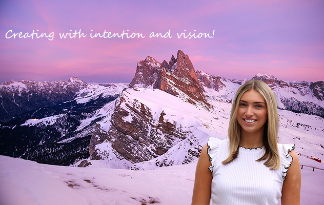

My name is Ella Lescinskas and I am a junior at Syracuse University. I am a Innovation, society, and technology major with a concentration in web design and management. I am interested in website design and digital marketing. Outside of school I enjoy staying active by going on walks and attending Pilates classes. For pleasure I like to read books by Colleen Hoover as well as watch comedy movies. My favorite thing to do on my free time is go to the beach or be outside in any way!
Here are some of my favorite foods: